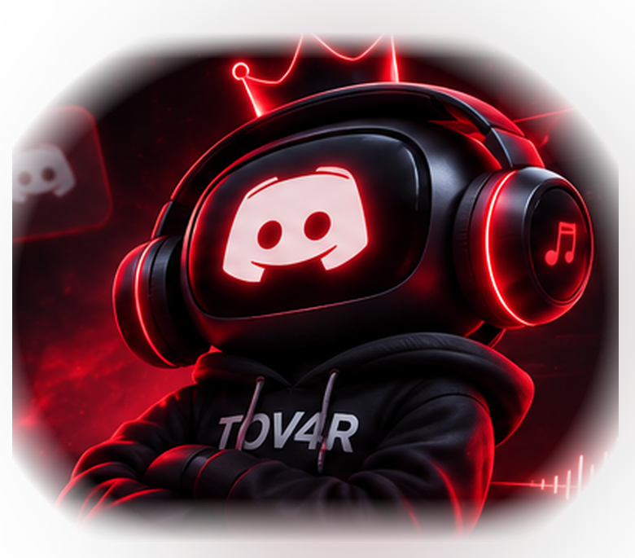

Invite TOV4R MUSIC
Utilise le lien officiel et choisis un serveur où tu peux ajouter des applications.
Ajouter le bot ↗TOV4R MUSIC // HELP CENTER
Un problème d'installation, de commande ou de lecture ? Tu trouveras ici les réponses, sans prise de tête.

YOUR MUSIC. YOUR SERVER.// START HERE
Utilise le lien officiel et choisis un serveur où tu peux ajouter des applications.
Ajouter le bot ↗Rejoins un canal vocal sur ton serveur et vérifie les autorisations du bot (connexion et parler).
Voir l'installation ↗Essaie /sma3 pour lancer une recherche de musique, selon la version du bot installée.
// HELP DESK
Les réponses les plus utiles pour utiliser le bot et comprendre le site.
Commence par vérifier que le bot est connecté au bon canal vocal, que les permissions Se connecter et Parler sont accordées, et que le volume n'est pas à zéro. Certaines sources ou certains liens peuvent ne pas être pris en charge par la version actuelle du bot.
Ouvre le lien d'invitation officiel, sélectionne ton serveur et valide les autorisations demandées. Si le serveur ne s'affiche pas, vérifie que tu as le droit d'y gérer les applications.
Le site liste /sma3, /skot, /kml, /next, /list et d'autres commandes. La liste réellement disponible dépend de la version du bot installée. Retrouve les détails dans la page Commandes.
L'album est proposé via un lecteur officiel Apple Music. Sa disponibilité et la lecture complète dépendent de ta région, de ton compte et parfois d'un abonnement. Les fichiers de Stormy ne sont pas copiés ou hébergés sur TOV4R MUSIC.
Le lecteur TOV4R Player joue quatre créations instrumentales originales livrées avec le site. Tu peux aussi y importer des fichiers audio depuis ton propre appareil. Le lecteur Stormy / DESPERADO est un composant officiel Apple Music pour l'album demandé.
Sur l'accueil, dans la section TOV4R Player, clique sur Importer mes fichiers audio puis sélectionne des fichiers audio. Ils restent dans ton navigateur, rien n'est envoyé à un serveur. Ils disparaissent de la playlist quand tu fermes ou actualises la page.
Non. Le site est un portail public : il présente le bot, sa playlist et ses commandes. Piloter le bot en direct depuis le web exigerait un backend sécurisé, une authentification Discord OAuth et une API côté bot.
La compatibilité dépend de la version du bot et du fournisseur. Ne considère pas l'apparition d'une plateforme sur le site comme une garantie que tous les liens et toutes les playlists fonctionneront dans Discord.
Vérifie les permissions de l'application sur le serveur et la synchronisation des commandes globales. Si le bot vient d'être installé, il peut parfois falloir rouvrir Discord pour rafraîchir l'affichage.
Le lien vers un serveur de support séparé n'a pas encore été configuré sur ce site. En attendant, vérifie les messages de statut et les permissions du bot, et utilise les indications ci-dessus.
// BACK TO MUSIC
Retourne à la playlist ou invite le bot sur ton serveur Discord.